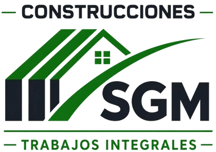
Construcciones SGM · Reformas y trabajos integralesPresupuestos y facturas en minutos, y el control de las obras y del equipo en tiempo real. Con la imagen de SGM y pensadas para quien está más en la obra que en la oficina.
Sergio hacía cada presupuesto en Excel y podía tardar una hora en uno solo. Las facturas, los clientes y los gastos estaban repartidos entre hojas, papeles y WhatsApp.
Con varias obras abiertas a la vez, además, necesitaba saber quién está trabajando, dónde y desde qué hora, y cumplir el registro diario de jornada sin papeleo.
La respuesta fueron dos herramientas a medida, sencillas de usar, que comparten la identidad de la empresa.
Presupuestos profesionales en minutos, facturas, clientes, obras y gastos. Con un asistente al que se le cuenta el trabajo y monta las partidas, y PDF corporativos que se envían por WhatsApp o correo desde la propia app.
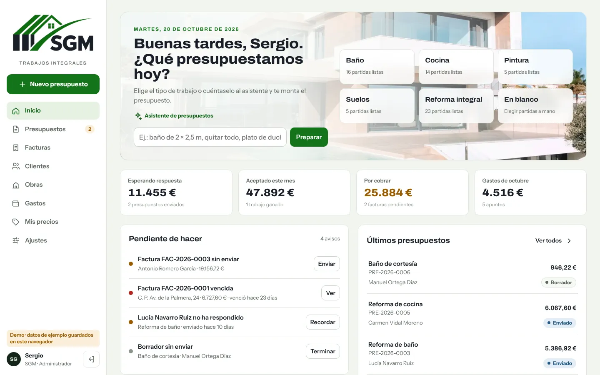
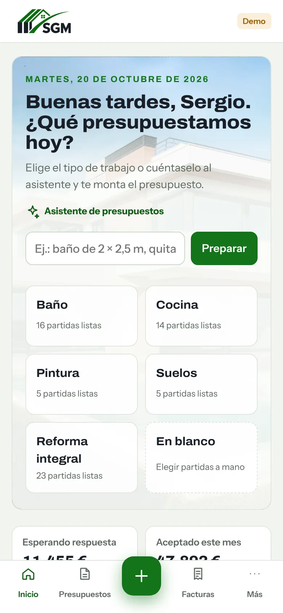
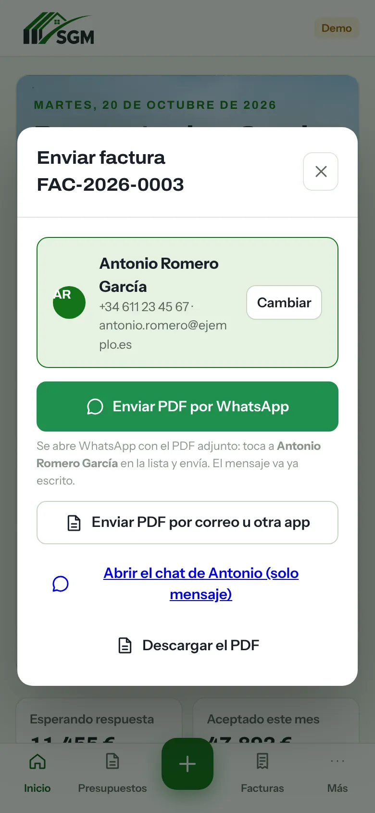
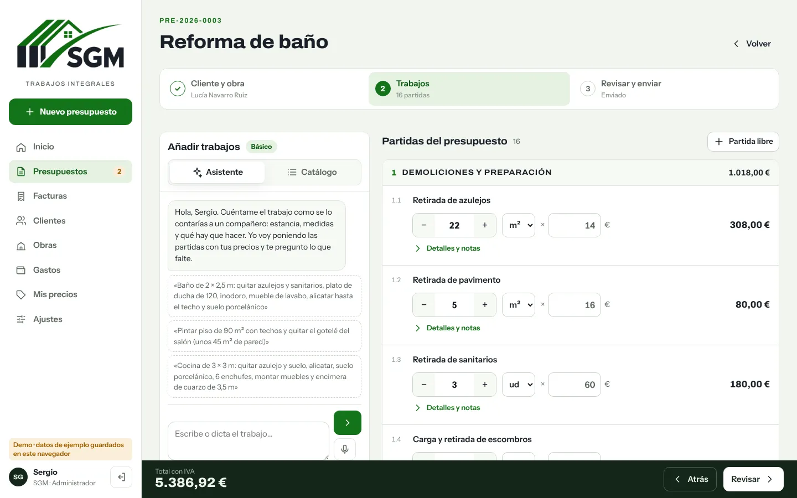
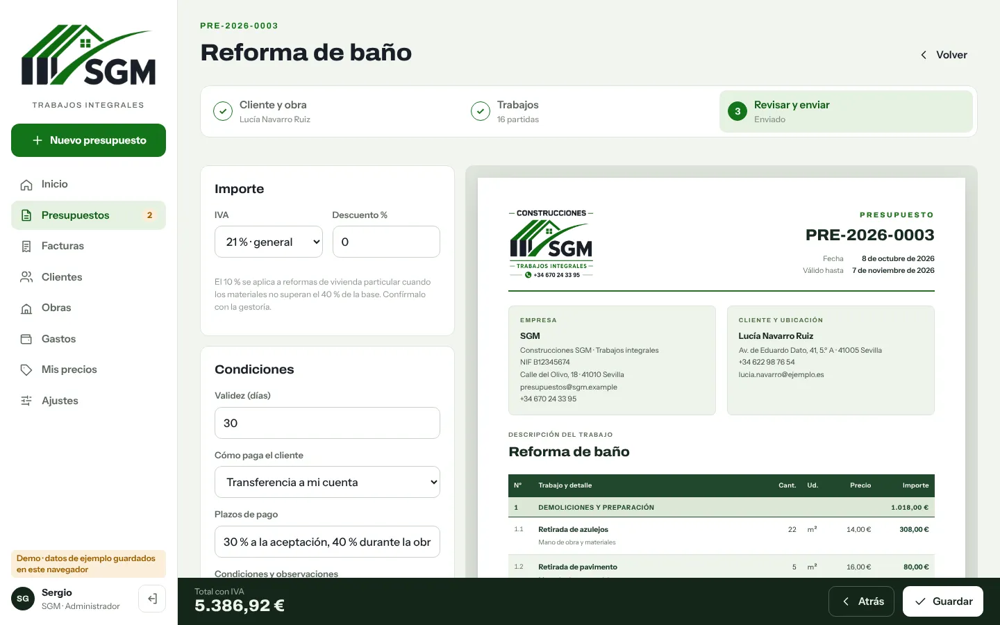
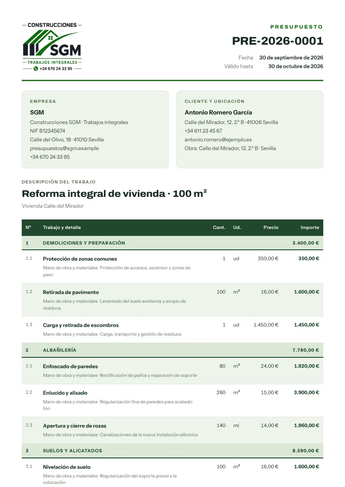
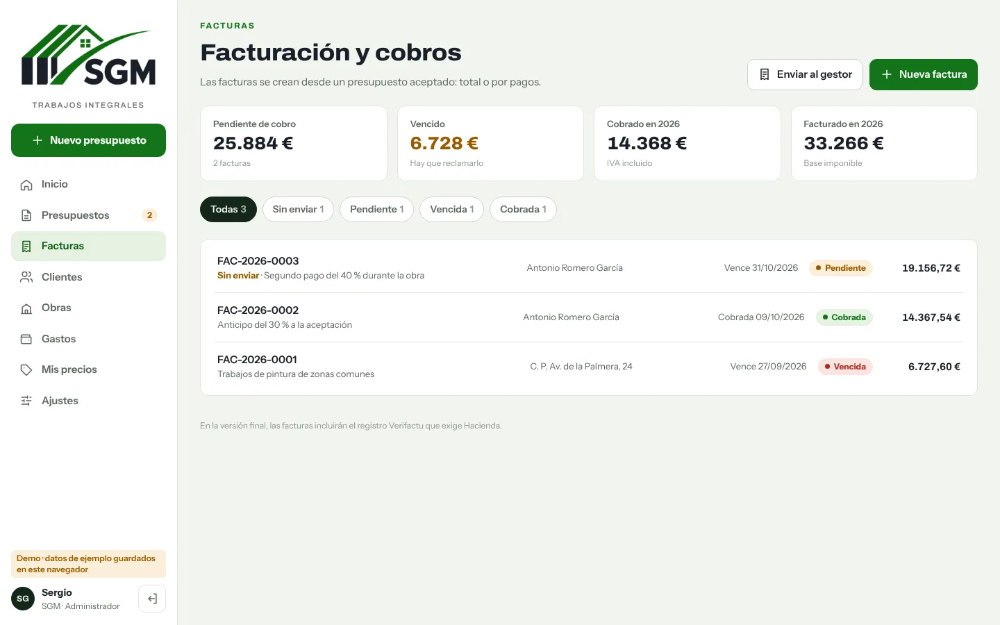
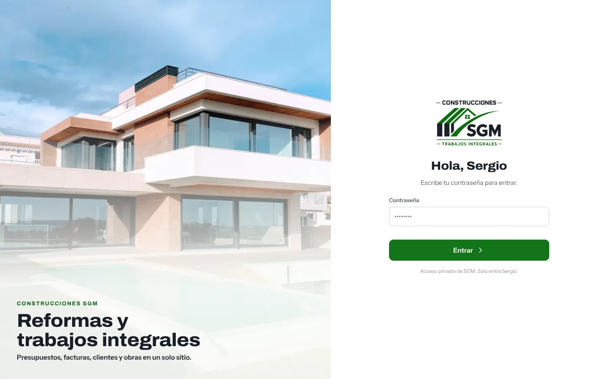
Plantillas (baño, cocina, pintura, suelos, reforma integral), catálogo por oficios y su tarifa, que se actualiza sola al cambiar un precio.
Sergio describe el trabajo con sus palabras y el asistente añade partidas, calcula medidas y pregunta lo que falta.
Documento con capítulos, IVA, forma de pago y firma. Se envía por WhatsApp o correo con el PDF adjunto desde la app.
Factura total o por pagos desde el presupuesto aceptado, vencidas y pendientes, y un PDF mensual para la gestoría.
Ficha de cada cliente con su historial y forma de pago, y los contactos del móvil dentro de la app.
Gastos con foto del ticket y margen real de cada obra: presupuestado frente a gastado.
Fichajes con PIN y comprobación de ubicación, panel del encargado con quién trabaja ahora, obras con su zona en el mapa, asistencia mensual e incidencias. Cumple el registro diario de jornada sin papeles.
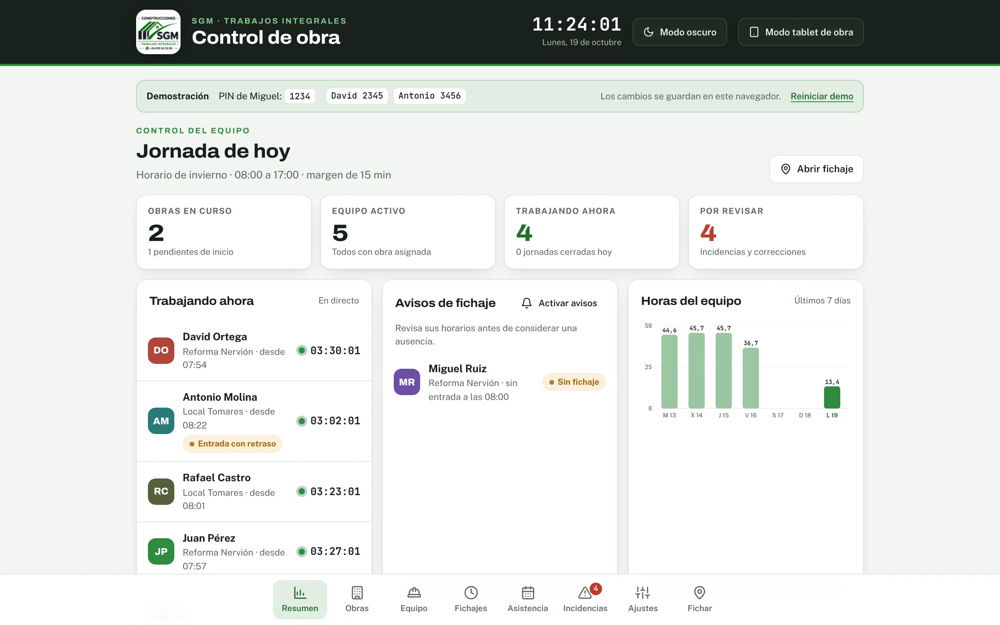
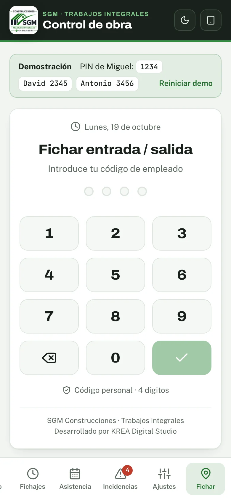
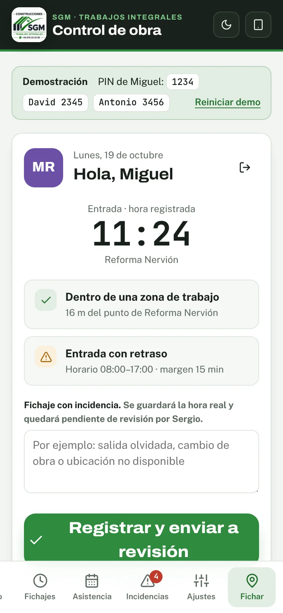
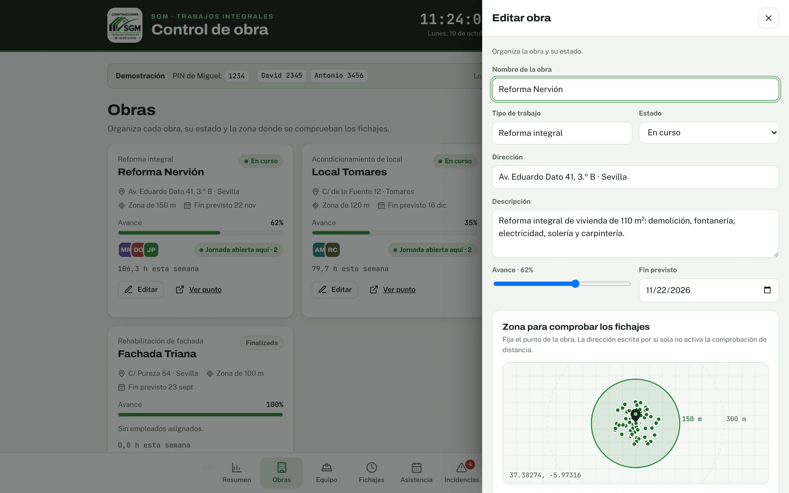
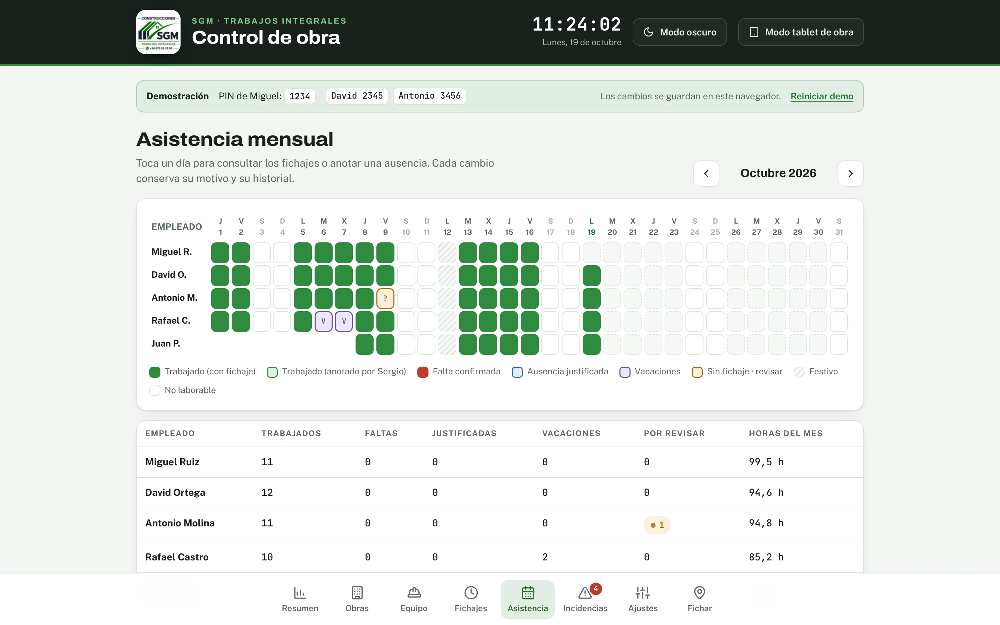
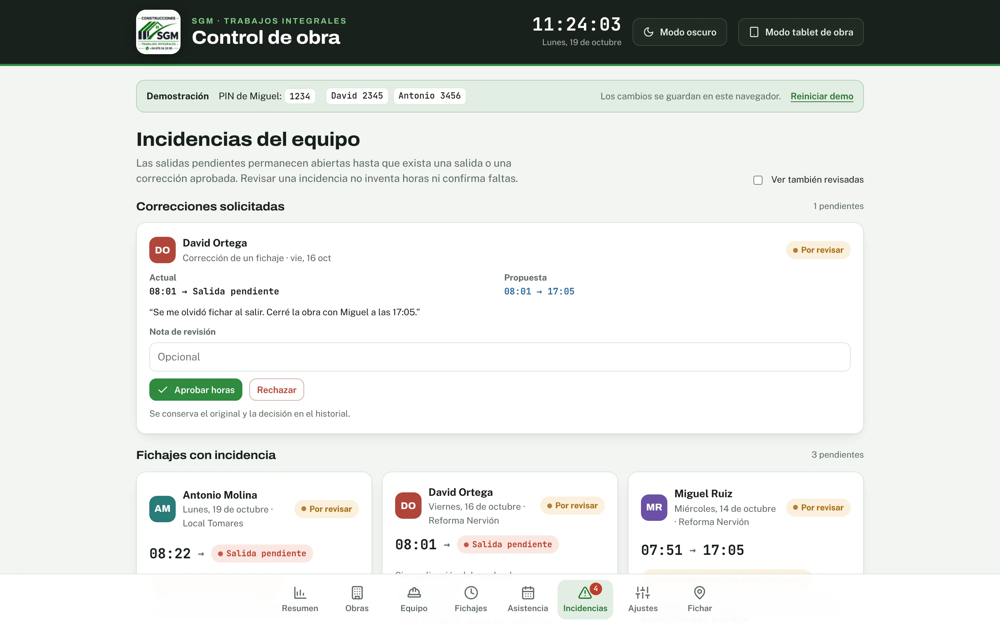
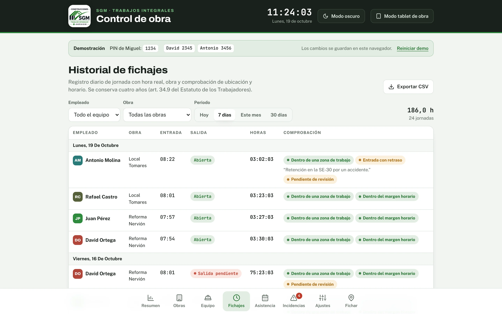
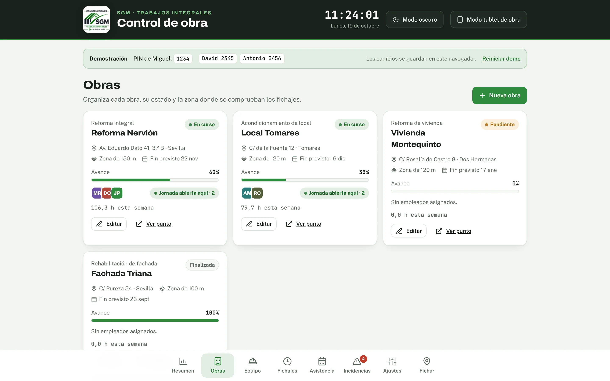
PIN de 4 dígitos desde el móvil del operario o la tablet de la obra, con comprobación de GPS y horario.
Quién trabaja ahora y en qué obra, avisos de quien no ha fichado y horas del equipo de la semana.
Historial filtrable y exportación del registro diario, como exige el art. 34.9 del Estatuto de los Trabajadores.